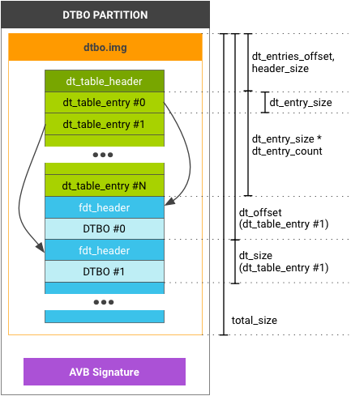

If your DTB/DTBO is in a unique partition, e.g. dtb and
dtbo partition, use the following table structure and header
format:

dtb/dtbo partition layout (for AVB signature, see
Security).
The dt_table_header is only for the
dtb/dtbo partition; you CANNOT append this format
after the end of image.gz. If you have a single DTB/DTBO, you must
still use this format (and the dt_entry_size in
dt_table_header is 1).
#define DT_TABLE_MAGIC 0xd7b7ab1e
struct dt_table_header {
uint32_t magic; // DT_TABLE_MAGIC
uint32_t total_size; // includes dt_table_header + all dt_table_entry
// and all dtb/dtbo
uint32_t header_size; // sizeof(dt_table_header)
uint32_t dt_entry_size; // sizeof(dt_table_entry)
uint32_t dt_entry_count; // number of dt_table_entry
uint32_t dt_entries_offset; // offset to the first dt_table_entry
// from head of dt_table_header
uint32_t page_size; // flash page size we assume
uint32_t reserved[1]; // must be zero
};
struct dt_table_entry {
uint32_t dt_size;
uint32_t dt_offset; // offset from head of dt_table_header
uint32_t id; // optional, must be zero if unused
uint32_t rev; // optional, must be zero if unused
uint32_t custom[4]; // optional, must be zero if unused
};
To read all dt_table_entry, use the dt_entry_size,
dt_entry_count, and dt_entries_offset. Example:
my_read(entries_buf,
header_addr + header->dt_entries_offset,
header->dt_entry_size * header->dt_entry_count);
The id, rev, custom in
dt_table_entry are optional hardware identifications of the device
tree the bootloader can use to efficiently identify the DTB/DTBO to load. If the
bootloader requires additional information, put it in the DTB/DTBO where
bootloader can read it by parsing DTB/DTBO (see the sample code below).
The following sample code checks the hardware identification in bootloader.
check_dtbo() function checks the hardware identification.
It first checks the data in struct dt_table_entry (id,
rev, etc.). If this data is not enough, it loads dtb
data into memory and checks the value in dtb.my_hw_information and soc_id
properties are parsed in the root node (example in my_dtbo_1.dts).
[my_dtbo_1.dts]
/dts-v1/;
/plugin/;
/ {
/* As DTS design, these properties only for loader, won't overlay */
compatible = "board_manufacturer,board_model";
/* These properties are examples */
board_id = <0x00010000>;
board_rev = <0x00010001>;
another_hw_information = "some_data";
soc_id = <0x68000000>;
...
};
&device@0 {
value = <0x1>;
status = "okay";
};
[my_bootloader.c]
int check_dtbo(const dt_table_entry *entry, uint32_t header_addr) {
...
if (entry->id != ... || entry->rev != ...) {
...
}
...
void * fdt_buf = my_load_dtb(header_addr + entry->dt_offset, entry->dt_size);
int root_node_off = fdt_path_offset(fdt_buf, "/");
...
const char *my_hw_information =
(const char *)fdt_getprop(fdt_buf, root_node_off, "my_hw_information", NULL);
if (my_hw_information != NULL && strcmp(my_hw_information, ...) != 0) {
...
}
const fdt32_t *soc_id = fdt_getprop(fdt_buf, root_node_off, "soc_id", NULL);
if (soc_id != NULL && *soc_id != ...) {
...
}
...
}
mkdtimg is a tool for creating
dtb/dtbo images
(source
code at system/libufdt in AOSP). mkdtimg supports
several commands, including create, cfg_create, and
dump.
Use the create command to create a
dtb/dtbo image:
$mkdtimg create <image_filename> (<global-option>...) \
<ftb1_filename> (<entry1_option>...) \
<ftb2_filename> (<entry2_option>...) \
...
ftbX_filename generates a dt_table_entry in the
image. entryX_options are the values to assign to
dt_table_entry. These values can be any of the following:
--id=<number|path> --rev=<number|path> --custom0=<number|path> --custom1=<number|path> --custom2=<number|path> --custom3=<number|path>
Number values can be a 32-bit digit (such as 68000) or a hex number (such as 0x6800). Alternatively, you can specify a path using the format:
<full_node_path>:<property_name>
For example, /board/:id. mkdtimg reads the value
from the path in the DTB/DTBO file and assigns the value (32-bit) to a relative
property in dt_table_entry. Alternatively, you can give a
global_option as a default option for all entries. The default
value of page_size in dt_table_header is 2048; use
global_option --page_size=<number> to assign a different
value.
Example:
[board1.dts]
/dts-v1/;
/plugin/;
/ {
compatible = "board_manufacturer,board_model";
board_id = <0x00010000>;
board_rev = <0x00010001>;
another_hw_information = "some_data";
...
};
&device@0 {
value = <0x1>;
status = "okay";
};
$mkdtimg create dtbo.img --id=/:board_id --custom0=0xabc \
board1.dtbo \
board2.dtbo --id=0x6800 \
board3.dtbo --id=0x6801 --custom0=0x123
dt_table_entry (board1.dtbo) id
is 0x00010000 and custom[0] is
0x00000abc.id is 0x00006800 and
custom[0] is 0x00000abc.id is 0x00006801 and custom[0]
is 0x00000123.0).The cfg_create command creates an image with a config file in
the following format:
# global options <global_option> ... # entries <ftb1_filename> # comment <entry1_option> # comment ... <ftb2_filename> <entry2_option> ... ...
Options global_option and entryX_option must start
with one or more space characters (these options are the same as
create options, without the -- prefix). Empty lines or
lines beginning with # are ignored.
Example:
[dtboimg.cfg] # global options id=/:board_id rev=/:board_rev custom0=0xabc board1.dtbo board2.dtbo id=0x6800 # override the value of id in global options board2.dtbo id=0x6801 # override the value of id in global options custom0=0x123 # override the value of custom0 in global options $mkdtimg cfg_create dtbo.img dtboimg.cfg
mkdtimg does not handle alignment for
.dtb/.dtbo files but rather appends them to the image.
When you use dtc to compile .dts to
.dtb/.dtbo, you must add option -a. For
example, adding the option -a 4 adds padding so the size of
.dtb/.dtbo aligns to 4 bytes.
Several DT table entries can share a .dtb/.dtbo. If
you use the same filename for different entries, it stores only one content in
the image with same dt_offset and dt_size. This is
useful when using different hardware with identical DTs.
For dtb/dtbo images, use the dump
command to print the information in the image. Example:
$mkdtimg dump dtbo.img
dt_table_header:
magic = d7b7ab1e
total_size = 1300
header_size = 32
dt_entry_size = 32
dt_entry_count = 3
dt_entries_offset = 32
page_size = 2048
reserved[0] = 00000000
dt_table_entry[0]:
dt_size = 380
dt_offset = 128
id = 00010000
rev = 00010001
custom[0] = 00000abc
custom[1] = 00000000
custom[2] = 00000000
custom[3] = 00000000
(FDT)size = 380
(FDT)compatible = board_manufacturer,board_model
...